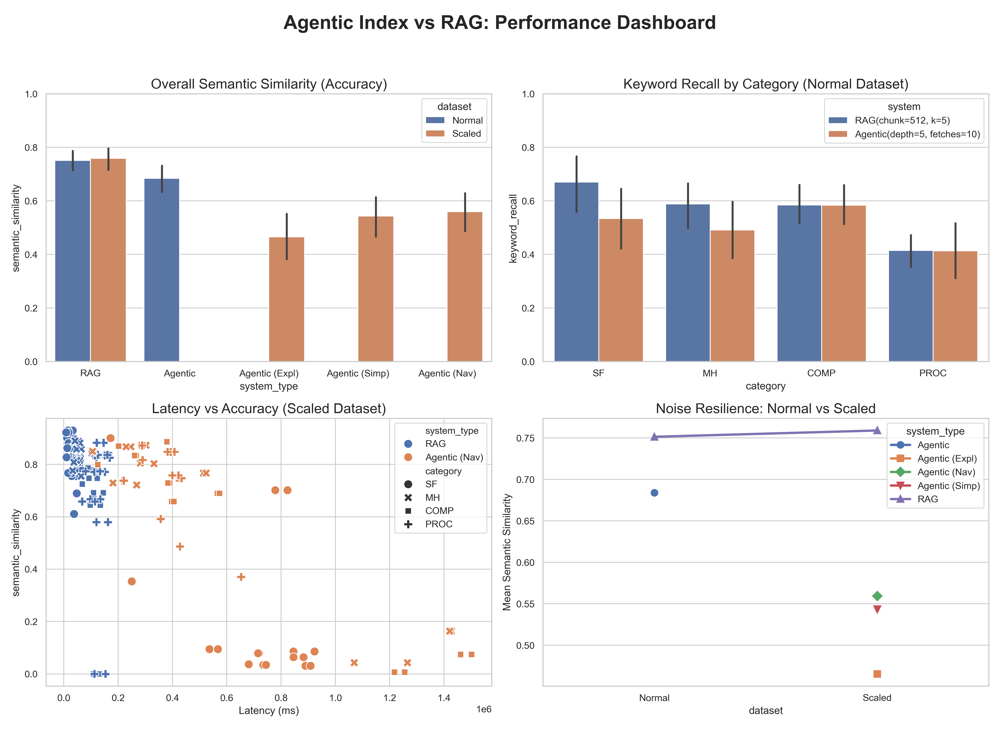

The Agentic Index consistently outperforms standard RAG in Multi-Hop (MH) and Comparison (COMP) categories, where navigating document structure is critical.
While accuracy drops across all systems as noise is added (Scaled dataset), the Agentic (Navigational) mode shows significant robustness compared to simpler agentic strategies.
Agentic retrieval involves multiple LLM calls, leading to higher latency (~30-60s) compared to RAG's sub-second retrieval. This is the price for structural reasoning.
Use Agentic Index for complex technical manuals and deep reasoning tasks. Use RAG for high-speed, shallow fact-finding across large, flat corpora.